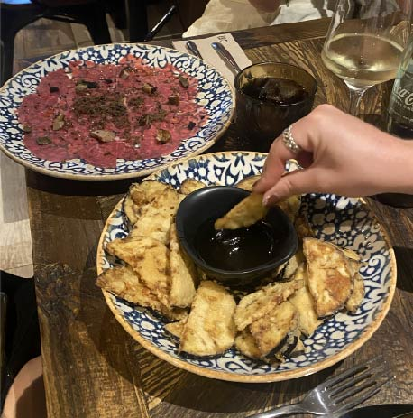
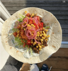
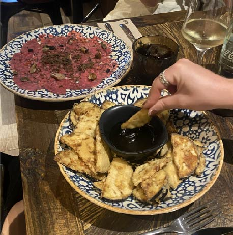
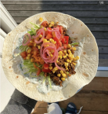

Hvis du køber dumpling-dej, følg anvisningerne på pakken for at forberede dejen.
Forbered fyldet ved at hakke ingredienserne fint og blande dem i en skål.
Rul dejen ud i små cirkler (ca. 8-10 cm i diameter).
Læg en teskefuld fyld i midten af hver dejcirkel.
Fold dejen over fyldet for at danne en halvmåneform.
Tryk kanterne sammen for at forsegle dumplingen.
Der er flere måder at tilberede dumplings på:
Dampning: Placer dumplings i en dampkurv eller en gryde med dampstativ og damp dem i cirka 15-20 minutter.
Kogning: Kog dumplings i en gryde med let kogende vand i cirka 3-5 minutter, eller indtil de flyder op til overfladen.
Stegning: Varm lidt olie i en pande, og steg dumplings på begge sider, indtil de er gyldne og sprøde.
Servering:
Server dine dumplings varme med din foretrukne dypningssauce. Den klassiske sauce består af en blanding af sojasovs, risvineddike, sesamolie og chiliolie.


 


